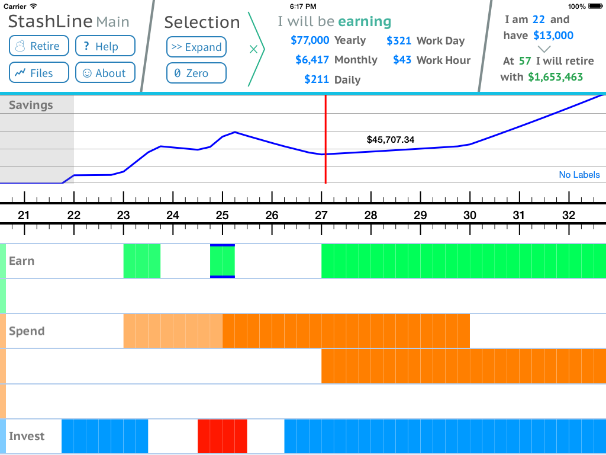

StashLine
By Tristan Hume
StashLine is an IOS app for planning your financial future. Enter your expected income and expenses on a beautiful timeline and see how much you can save.


StashLine is an IOS app for planning your financial future. Enter your expected income and expenses on a beautiful timeline and see how much you can save.

StashLine is available as a free app for both iPhone and iPad. Use the iPad for a better view or an iPhone for checking your model on the go.
You can enter estimates of future income and expenses any way you like and StashLine will calculate the monthly value.
StashLine's model can show you how your savings will change over your life and tell you when you can retire safely.
StashLine uses your life as a timeline and is just as good for 5 year time horizons as it is for 50.
Unlike simple retirement calculators, StashLine doesn't force you to distill your life into a few numbers. You can enter estimates that change over time to account for raises, marriages and anything else.
You could use an expense bar to represent your mortgage payments and try dragging it to different lengths to figure out the optimal pay-off period.
Note: This was written in 2014 when I released StashLine, I'm no longer a high school student.
I'm a high school student and I plan my life like crazy. I wanted to see how my life could unfold but I couldn't distill my plans into simple numbers for financial formulas. I created StashLine so that I could get an overview of my financial future in all its complexity.
Take a look at this annotated screenshot of my StashLine plan to see how I use StashLine to model my future.
Using a simple growth percentage that changes over time StashLine can simulate the growth and tell you when you can retire indefinitely off of investment growth alone. That one number can encompass estimated stock growth, reinvested dividends and compensate for inflation.
You can keep use multiple files in order to compare different scenarios of your life or different friends or family members. You can easily duplicate your main plan to try out wild ideas without messing up your master copy.
If you are ambitious you can even use iTunes File Sharing to copy files between devices.
Note: The video uses a modified version of my model with most numbers tweaked to protect my real plan.